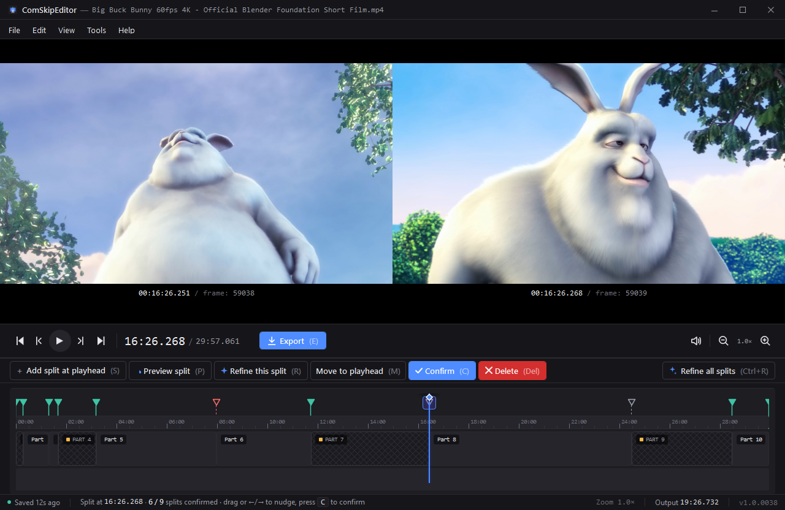

Cut the commercials.
Keep the show.
A frame-accurate, non-destructive editor for trimming ad breaks out of recorded TV, for the kind of people who hand-curate a media library.

Most ad-trim workflows are destructive, slow, and approximate. This one isn't.
Seeks that don't make you wait.
mpv-backed playback lands on a keyframe in milliseconds. The alternative (re-decoding from the nearest I-frame every time) takes whole seconds. You'll feel the difference on every nudge.
Frame-accurate, not "close enough."
Splits are stored as int64 microsecond offsets and refined against the actual frame index. Jog left/right with , / . until the cut sits exactly between the last frame of the show and the first frame of the ad.
Non-destructive by default.
Edits live in a sidecar .adt.json. Trash it and the original recording is byte-identical to what your DVR wrote. Export builds a new merged MP4; the source is never touched.
Built for the people who actually watch the library.
Non-destructive sidecar edits
Every split, label, and refinement is written to a .adt.json next to the recording. Source files are read-only.
Frame-accurate timeline
Microsecond-resolution playhead, snap-to-frame on splits, and zoom from full-clip to single-frame in one keystroke.
Auto-detect commercials
Imports Comskip .edl / .txt and ships its own audio-silence + black-frame detector for raw recordings.
One-click merged export
FFmpeg stream-copy where it can, re-encodes only the parts that cross cuts. A 30-minute episode lands in under three minutes.
Keyboard-driven
Every action has a shortcut. S splits, K toggles keep, R refines, E exports. No mouse required.
Plex / Jellyfin friendly
Outputs match the source's naming and folder structure. Drop the file back where it came from and your library scanner just picks it up.
Source minus commercials, equals the file you actually wanted.
No proprietary codecs. No vendored binaries you can't audit. Every dependency ships with source.
- .NET 10 App runtime · WPF
- mpv Playback engine
- FFmpeg Cut & concat
- WiX Installer
- Comskip Ad detection (optional)
AdTrim v1.0.0000
Latest release. Windows installer (.exe). No bundled extras, no telemetry.